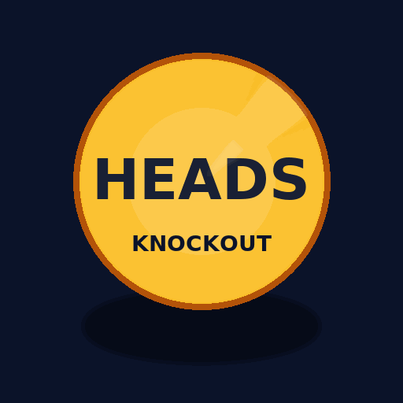

Kick-Start Any Class in 90 Seconds
Every teacher knows the awkward dead air at the start of a lesson — late arrivals, half-engaged chatter, the slow grind of roll call. Coin Flip Knockout replaces that noise with a burst of energy. In 90 seconds, the whole class is moving, one student walks away with a small victory, and the room is primed for learning.
How It Works
- Settle +1 — Being on time to class earns a reward which initiates positive encouragement. Punctual attendance becomes a reward, not paperwork. (This also assists teacher with active roll marking data.)
- Pick a side — Students choose Heads or Tails. (If time is tight, hit Random Split and move on.)
- Flip → Knockout — Losing side sits. Survivors re-pick.
- Final winner +3 — Within 2–3 flips, one student remains. They take the spotlight and earn +3 points.
Total time: ~60–90 seconds. Everyone makes a decision, suspense builds, and closure is immediate.
Why It Works
- Universal participation — every student acts within the first 20 seconds.
- Short, sharp, predictable — ritual replaces drift; students know what’s coming.
- Healthy competition — someone wins, everyone else resets at zero cost.
- Momentum — the transition to the main lesson is clean, with the class already alert.
With just one winner each round, students begin to appreciate how rare it is to stand out in a group of 20–30. That rarity fuels healthy competition — seeing a classmate succeed plants the desire to earn points too.
Quick Notes for Teachers
- Offline, single file — no logins, no wifi, just open on the IWB.
- Roster-aware — preload your student list once; it saves locally.
- Failsafe — if everyone picks the same side, use Random Split.
The Effect
Used daily, Coin Flip Knockout quickly becomes a ritual students ask for. It transforms the dullest part of the period into the spark that ignites it. In 90 seconds, you’ve shifted the whole class from idle to engaged — and you haven’t lost a minute of teaching time.
▶ Play Coin Flip Now